東京第二日（下）：銀座、淺草地下街與晴空塔夜行
記憶存檔（原旅程隨筆）
告別了西新宿的高空俯瞰，下午搭地鐵直奔銀座。假日的銀座中央通實施步行者天國，整條大馬路封街讓行人隨意漫步，是一定要來踩街感受氣場的地方。
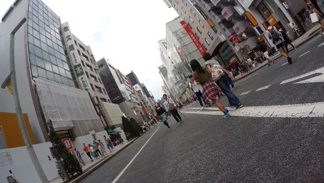
雙腿走累了，就是該找家咖啡廳坐下來吃下午茶的時候。轉進「Ginza Cozy Corner 銀座 1 丁目本店」，點了咖啡與蛋糕，犒賞一下走了一整個上午的雙腳。
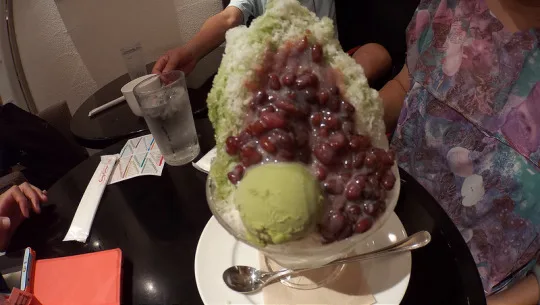
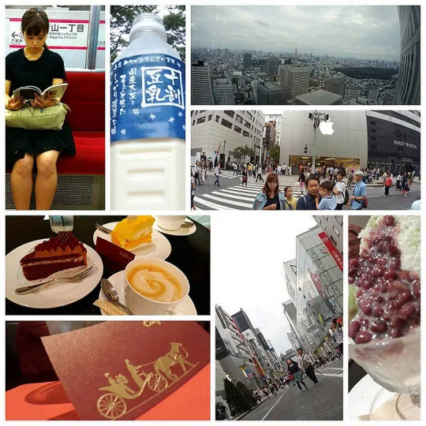
這家店最引人注目的，是牆面上整齊嵌滿了各色各樣用來製作傳統和菓子的木造模具，將老工藝轉化成現代喫茶店的視覺背景，氣氛極好。
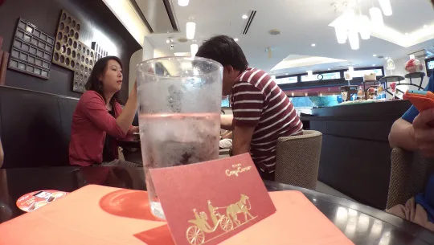
吃完甜點繼續回到銀座街頭。午後的陽光斜照在名品店與穿梭的人潮上，街景乾淨俐落。
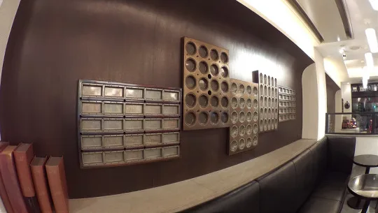
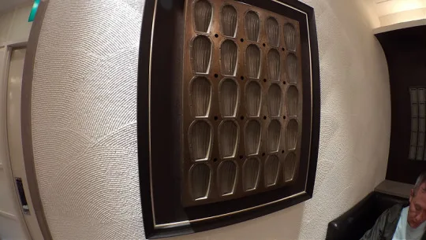
看著身邊拎著大牌紙袋的人群與光鮮亮麗的精品櫥窗，腦海裡浮現電影裡的經典台詞——俗話說得好，有錢能使鬼推磨、Money Maketh Man，放在銀座這個地方看，真是一點都沒錯！
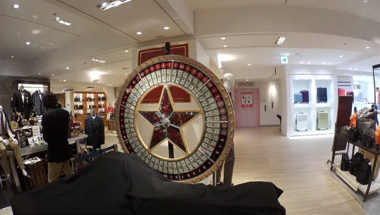
離開貴氣逼人的銀座，傍晚搭車來到淺草。鑽進帶著濃濃昭和氣息的淺草地下街區，斑駁的招牌、低矮的天花板與老派居酒屋，跟剛才的銀座完全是兩個平行時空。可惜時間有限，沒辦法在這裡一間一間細細探訪，只能留下一瞥印象。
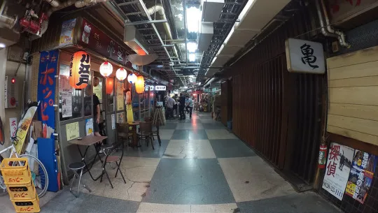
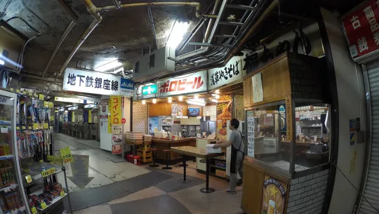
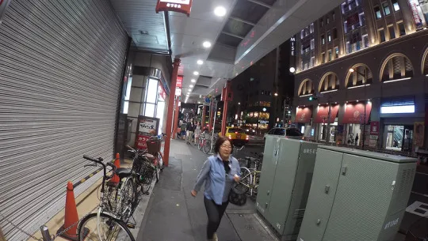
晚餐找了間迴轉壽司果腹。坦白說吃完這一頓，以我個人的口味評價，大阪道頓堀的迴轉壽司依然輕鬆獲勝！
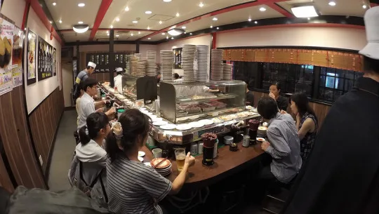
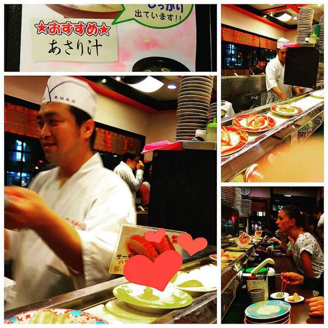
吃壽司的中途滑滑手機，看著臉書上正火紅的「台灣公道伯」粉絲頁貼文，忍不住笑出來，這專頁操作真的太有哏、太有趣了！
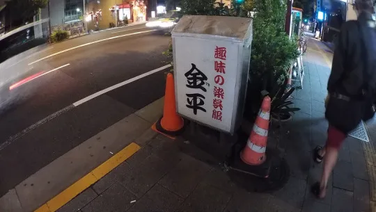
迴轉壽司吃完總覺得少了一味，二話不說出門立刻轉戰松屋！來碗熱呼呼的牛丼，這才叫接地氣又過癮的 B 級美食結尾。
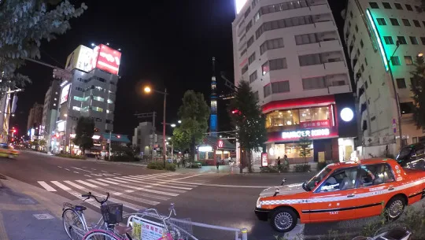
夜色漸濃，遠處的晴空塔（Tokyo Skytree）在夜空裡靜靜亮著光。走在東京的街道上，為這個充實的第二天劃下小結。
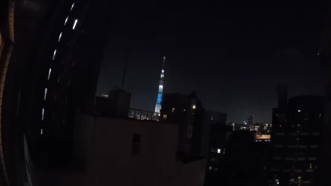